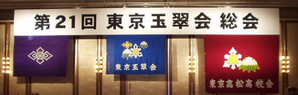

|
2003年(H15)７月１２日、ホテルパシフィック東京におきまして第２１回東京玉翠会総会が盛大に行われました。 当日は、来賓の方々も含め約９００名もの大勢の方が参加していただき誠にありがとうございました。 今年は「さぬきマイブーム・・・あなたの中の讃岐を振り返って見ませんか」を総会テーマに、うどんをはじめ讃岐でしか味わえない料理の数々をご用意するとともに、今の讃岐の情報を満載したパンフレットなどを揃え参加者の皆様に「さぬき」を十分堪能していただきました。 また、母校を懐かしむイベントとしては「懐かしの写真集」や「ビデオ上映」などを実施し、お客様それぞれ、青春の良き日々を懐かしんでいただきました。 クライマックスは応援団、ブラスバンド、合唱団のリードによる参加者全員での校歌の大合唱で盛り上がりました。 ５４年幹事団一同、関係者の皆さんまた参加者の皆さんには大変お世話になったことをご報告とともにお礼申し上げます。 本当にありがとうございました。  総会当日の写真集 当日準備風景 総会風景 食コーナー 物販コーナー、パンフコーナー、託児 高松高校東京玉翠会トップページ |